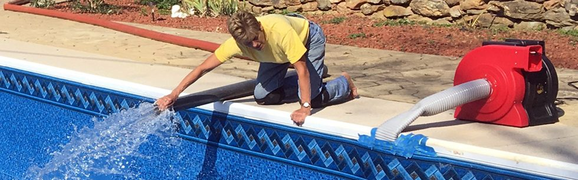

Seasonal & ongoing care
- Openings and closings
- Vacation pool care
- Weekly pool care
Services
Use our services to keep your pool or spa running strong all season long. From maintenance to essential parts, we’re here to help.

Pool care, with a personal touch
At Neiderer’s Pool Sales & Service, we understand the importance of maintaining your pool or spa. Our knowledgeable staff can answer your questions and install, replace, or repair many essential parts.
More time by the water
Weekly pool care and vacation pool care help keep your pool up and running throughout the season.
Let’s talk pools
Call or visit for pool and spa service, supplies, and maintenance.